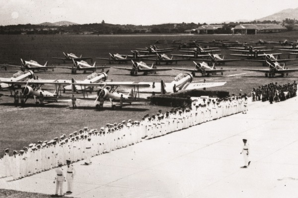

Origem da FAB (Força Aerea Brasileira)

Em 1908 originou-se a ideia das Forças Aéreas Brasileiras (FAB), a aero estação militar onde iriam ficar balões de reconhecimento. Sonho que não deu certo, pois foi um fracasso, ocasionando na morte de um tripulante (Tenente Juventino da Fonseca), na primeira tentativa de voo, desencorajando os com o projeto.
Somete por volta de 1910 teve-se os primeiros voos de aeronaves no Brasil, entretanto, ainda sem nenhuma estrutura para tal feito, sem organização sem registros, sem coordenadas, fazendo com que os pilotos tivesses seus (Brêves), distintivos na França. Em 19011 e criado o Aeroclube Brasileiro com intuito de arrecadar fundos para o ensino e formação de profissionais de pilotagem no brasil, onde com arrecadações usavam para comprar materiais relacionados ao ensino de pilotagem
FAB

Em 20 de janeiro de 1941 criada em meio a segunda guerra mundial, surge em nosso país, com a missão de manter a soberania em nosso espaço aéreo e integrar o território nacional, com vistas a defesa a pátria, surge a FAB (Força Aérea Brasileira).
Exatamente um ano depois, em 22 de maio de 1942, o braço armado tinha o seu batismo de fogo: um avião B-25 da FAB atacou o submarino Barbarigo, da marinha italiana.
Acesso em: 24/03/2018 Fonte: https://goo.gl/gQ9Sem
Alguns dos serviços que a FAB executa em prol da segurança nacional
Enquanto muitas pessoas estarão viajando para rever amigos e parentes no recesso de fim de ano, a Força Aérea Brasileira (FAB) estará presente na vida dos brasileiros em todas as regiões do País garantindo a segurança do espaço aéreo e de milhões de brasileiros. Estarão a postos militares que desempenham atividades relacionadas ao controle de tráfego aéreo, defesa aérea, busca e salvamento, segurança de voo, entre outras. Conheça algumas das atividades das equipes que estarão de prontidão durante o recesso:
Defesa Aerea
O Comando de Defesa Aeroespacial Brasileiro (COMDABRA) tem como missão empregar o poder aeroespacial brasileiro a fim de assegurar a soberania do espaço aéreo nacional.
A unidade gerencia o acionamento das aeronaves em missões de busca e salvamento (SAR - Search and Rescue) em todo o espaço sob a responsabilidade brasileira, que é de aproximadamente 22 milhões de km2. Esta dimensão abrange o território continental, a zona econômica exclusiva e áreas oceânicas sob a responsabilidade do Brasil por meio de acordos internacionais.
Caso haja o desaparecimento de aeronave ou embarcação dentro desta área, o COMDABRA aciona os meios adequados para localizar e salvar as pessoas em perigo na terra ou no mar. Além disso, o COMDABRA gerencia 24 horas por dia, sete dias por semana, atividades operacionais relevantes para a sociedade brasileira.
Como órgão central do Sistema de Defesa Aeroespacial Brasileiro (SISDABRA), este comando trabalham em prol do exercício da soberania no espaço aéreo brasileiro, contribuindo, silenciosamente, para a segurança da navegação aérea, bem como coibindo o uso do meio aéreo para atividades ilícitas ou nocivas para o Brasil.
Acesso em: 24/03/2018 Fonte: https://bit.ly/2vAtCNC
Controle de Tráfego Aéreo
O Primeiro Centro Integrado de Defesa Aérea e Controle do Tráfego Aéreo (CINDACTA I), localizado em Brasília, é uma das unidades da Força Aérea Brasileira que executam as atividades de controle do tráfego aéreo civil e militar, vigilância do espaço aéreo e comando das ações de defesa aérea no Brasil.
Não apenas nos recessos e feriados, mas durante o ano todo, as escalas operacionais são compostas por profissionais habilitados e preparados para executar as atividades voltadas para o controle de tráfego aéreo. São eles que resguardam os céus do Brasil em prol da segurança de todos os que viajam. A organização é responsável pelo gerenciamento de 45% do tráfego aéreo do País. Ela realiza também serviços de defesa aérea, informações aeronáuticas, meteorologia aeronáutica, telecomunicações aeronáuticas e busca e salvamento.
Acesso em: 24/03/2018 Fonte: https://goo.gl/gQ9
DCTA
Em 1967 surge o DCTA (Departamento de Ciência e Tecnologia Aeroespacial, através de um decreto que determina um estrutura e organização básica para o espaço aéreo.
Decreto, de nº 60.521, de 31 de março de 1967, dispõe em seu Art. 65: “O Comando-Geral de Pesquisa e Desenvolvimento” 19/04/2018 http://www.cta.br/index.php/historico.
O intuito da criação desse departamento, era organizar e estruturar de forma geral o desenvolvimento e pesquisas relacionados ao espaço aéreo, criando o então, seria de grande importância para que pudesse dar grandes passos em desenvolvimentos relacionados. Hoje fica ao dever do DCTA os desenvolvimentos de soluções de Cientifico e Tecnológico.
E com a Criação do ITA por volta de 1950, desde então vem se trabalhando lado a lado com projetos promissores, desde de aeronaves, com parceria com EMBRAER até mesmo com projetos de satélites. Com isso São Jose dos Campos se torna esse polo de desenvolvimento econômico de alta tecnologia.
Acesso em: 24/03/2018 Fonte: https://goo.gl/gQ9Sem